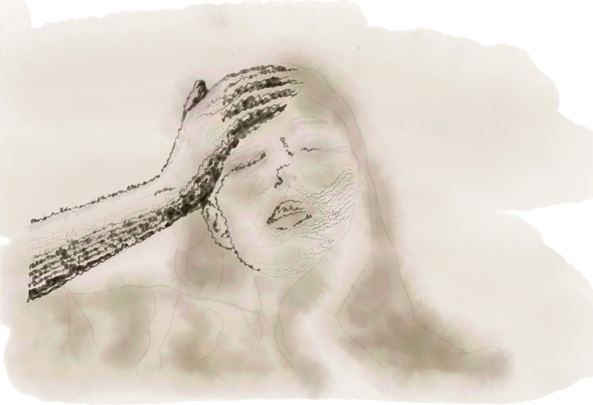

Archive
Woman in Words

Inspired by Cy Twombly, I built this composition by layering text- chosen from a variety of books, poetry, and quotes; all excerpts relating to the feeling of retrospection. Twombly utilized text to add meaning to his art, despite his texts not meaning to be read. Similarly, it’s hard to make out the sentences in my piece, but they hold conceptual value and elevate the viewing experience; many words can be noticed with close examination, inviting the audience in for a more intimate experience.
Idea development
